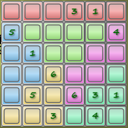
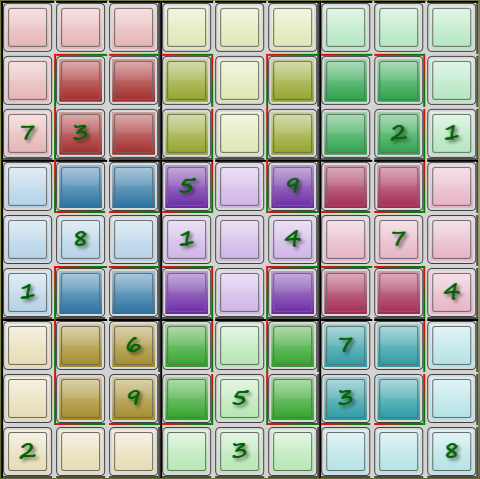
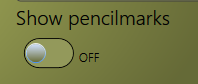

Na een tijd sudoku's te hebben opgelost, wilde ik zelf wel eens proberen zo'n programma te maken. Dit is het voorlopige resultaat.
Mijn sudoku programma
De onderdelen van het scherm:
Stel het bord-type (waar onder afmeting) in, voor een nieuw spel
Stel de moeilijkheidsgraad in (nog niet volledig werkzaam)
Start een nieuw spel, met de ingestelde afmetingen
Scores van de moeilijkheidsgraad van het huidige spel
Opslaan / laden van een spel (nog niet werkzaam)
Sluit het spel af
Het speelveld met de gegeven waarden in groen en de zelf geplaatste waarden in zwart
Selectie van het te plaatsen getal
Wissen van een geplaatst getal
Maak de laatste zet ongedaan
Indien aan, toon in elke cel de mogelijke waarden (zoals hier)
Kies tussen pen (echte getallen plaatsen) en potlood (mogelijkheden schrappen)
Het bekende doel van een sudoku puzzel
Zorg ervoor dat in elke rij, elke kolom en elk blok alle mogelijke cijfers (of tekens) precies éénmaal voorkomen.
Mogelijkheden
Naast de standaard 9×9 sudoku zijn er nog andere afmetingen mogelijk:
4×4
6×6
8×8
9×9
12×12
16×16
Groter dan dat wordt te onoverzichtelijk.
De 9×9 puzzel gebruikt cijfers (1-9). De kleinere puzzels kunnen symbolen gebruiken in plaats van cijfers (voor de variatie).
Voor de grotere puzzels zijn 10 cijfers niet genoeg, dus wordt doorgeteld in letters ("A", "B" etc). De exacte waarde maakt toch niet uit.
Maar naast afmetingen zijn er nog meer variaties mogelijk:
Regelmatig (rechthoekige blokken), de standaard
Onregelmatig (rijen en kolommen tellen normaal, maar de blokken zijn meestal niet rechthoekig. Let op de kleuren)
Met diagonaal: ook op de diagonalen moeten alle cijfers staan
"Hyper": er zijn extra blokken aangegeven (donkerder) waar ook alle cijfers in voor moeten komen
Een 6×6 grid met onregelmatige blokken

Een 8×8 grid met wisselende blokkenEen 9×9 grid met extra diagonalenEen 9×9 grid met hyper blokken

Spelen
Nieuw spel starten
Om een nieuw spel te starten:
Selecteer eerst het gewenste type bord (of laat staan, als dit al goed staat)
Stel de gewenste moeilijkheidsgraad in
Klik dan op "Start nieuw spel" en wacht tot de puzzel gegenereerd is
Oplossen maar !
Nieuw spel starten
Een getal plaatsen
Er zijn twee manieren om een een plek in de puzzel te voorzien van een nieuw getal:
Selecteer een getal in het getalblok rechtsboven en klik dan een of meer cellen aan waar dat getal ingezet moet worden
Selecteer eerst een cel (waarmee ook de bijbehorende rijen, kolommen en blokken gemarkeerd worden) en dan pas het getal dat er in moet
Er wordt gewaarschuwd als dit geplaatste getal in strijd is met eerder geplaatste getallen: de groepen met dubbele getallen worden rood gemarkeerd.
Een geplaatst getal verwijderen kan ook op twee manieren: plaats het getal nogmaals of gebruik de "leeg" knop (hieronder gemarkeerd met een 1).
Het getalblok
Het kleine witte cijfertje rechtsonder geeft aan hoevaak dit getal nog geplaatst moet worden.
Toon mogelijkheden
Een nuttig hulpmiddel is het tonen van de getallen die nog op de open posities mogelijk zijn. Deze worden automatisch bijgehouden op basis van de geplaatste getallen.
Je kan ook zelf waarden verwijderen, als je hebt besloten dat die zeker niet kunnen. Er wordt geen melding gegeven als de conclusie niet klopt.
Deze optie is niet te gebruiken als de puzzel "te makkelijk" is.
aan/uitzetten

Zodra de schakelaar op "aan" gezet is, verschijnen er twee extra knoppen:
pen/potlood keuze
Hiermee is te kiezen of er "echte" getallen geplaatst worden (pen) of de mogelijkheden verwijderd worden (potlood).
Hint
Als je vast komt te zitten, kan je op de "Hint" knop drukken. Hierna wordt eerst gecontroleerd of de ingevulde getallen overeenkomen met de oplossing. Zo niet, dan worden deze velden gemarkeerd. Je kan de waarden wissen of het veld van een ander getal voorzien.
Als de ingevulde getallen kloppen, wordt één getal ingevuld. Mogelijk geeft dit genoeg informatie om verder te komen. Zo niet, dan kan de hint nogmaals gebruikt worden.
Toetsenbord bediening
Enkele functies zijn met het toetsenbord te selecteren, voor de rest is een muis noodzakelijk.
Tab: Schakel tussen "pen" en "potlood" (mits "toon mogelijkheden" is aangevinkt)
0…9, A…F: selecteer dat getal of die letter (voor zover van toepassing).
Backspace: de "herstel" functie.
F1: deze (help) pagina
Installeren
Voor de (Windows) installer, klik hier en gebruik de "launch" link of de "Install" knop. Voer het gedownloade bestand uit.
Bij het opstarten van het programma wordt automatisch gecontroleerd of er een nieuwe versie is.
Is dit het geval, dan wordt aangeboden die nieuwe versie te installeren.
Nieuwe versie gevonden
Wordt deze nieuwe versie niet direct geaccepteerd, dan verschijnt dit venster pas als er weer een nieuwe versie gepubliceerd is. Of deïnstalleer de huidige versie en installeer opnieuw (dat is altijd de meest recente versie).
SmartScreen meldingen
Let op: Op Windows 8 en 10 krijg ik bij het (her)installeren een ernstig klinkende "SmartScreen" melding, omdat het door mij geschreven programma niet in de Windows lijst van veilige programma's staat.
Zoals dit: SmartScreen melding
Klik hier niet op de "OK" of "Don't run" knop (want dan wordt de installatie afgebroken), maar op de "more info" link (die in een nederlandstalig systeem vast wel "meer info" heet). Zie pijltje.
Dan wijzigt het scherm in: SmartScreen na "more info"
Klik daar op de "Run anyway" knop ("Toch uitvoeren"?) om de installatie door te laten gaan.